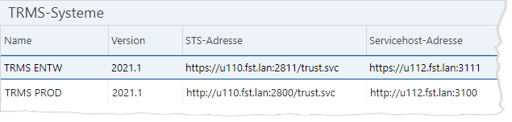
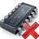

Analog zu den Stammdaten für IKAROS-Systeme, in denen die
auswählbaren IKAROS-Zielsysteme verwaltet werden, stehen in den Stammdaten für
TRMS-Systeme die Verbindungsdaten zu anderen TRMS-Systemen. Diese sind
erforderlich, wenn Sie Pakete, Changes oder Change Sets in ein anderes TRMS
übertragen möchten [Link]. Falls noch gar kein
TRMS-System definiert ist, erscheint bei der ersten Aktion, die eine Anmeldung
erfordert, automatisch der Bearbeitungsdialog für TRMS-Systeme [Link], mit dem Sie den ersten Systemeintrag
anlegen können.
Die Verbindungsdaten für IKAROS-Systeme werden separat im
Menüpunkt [Administration -> IKAROS-Systeme]
verwaltet [Link].
Die Liste der TRMS-Systeme finden Sie im TRMS unter [Administration -> TRMS-Systeme].

Abb. 37: Liste der TRMS-Systeme
Schaltflächen
|
Symbol |
Schaltfläche |
Beschreibung |
|

|
„Neu“
[Einfg] |
Öffnet den Bearbeitungsdialog für Systeme, um die
Verbindungsdaten zu einem weiteren TRMS-System zu speichern. |
|

|
„Filtern“
[Leertaste] |
Ruft den Filterdialog für die Auswahlliste
auf. |
|

|
„Aufheben“
[Strg] + [R] |
Hebt die aktuellen Filtereinstellungen auf. |
|

|
„Sichten“
[F6] |
Ruft den Verwaltungsdialog für benutzerdefinierte
Sichten auf. |
|
 |
„Cache
leeren“
[F10] |
Setzt den Stammdaten-Cache des TRMS zurück.
Dies ist nur notwendig, wenn Sie direkt per SQL
Änderungen an den „Systeme“-Stammdaten oder TRMS-Systemeinstellungen
vorgenommen haben. |